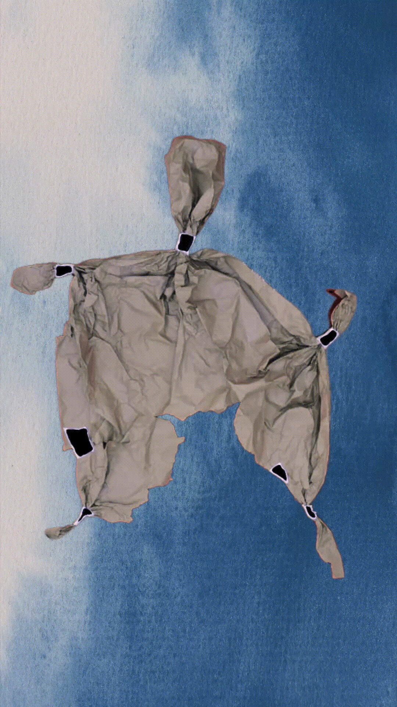

Anímate: a dar vida a los objetos
Programa Acciona Barrio · Villa El Estero, Cholchol · 2025
Taller de animación stop-motion con niños, niñas y sus familias, en colaboración con la artista titiritera Marcia Olave. Un proceso donde la participación y el compromiso de las familias fue parte fundamental de la creación.

¿Estás pensando un proyecto para tu comunidad educativa?
Conversemos →